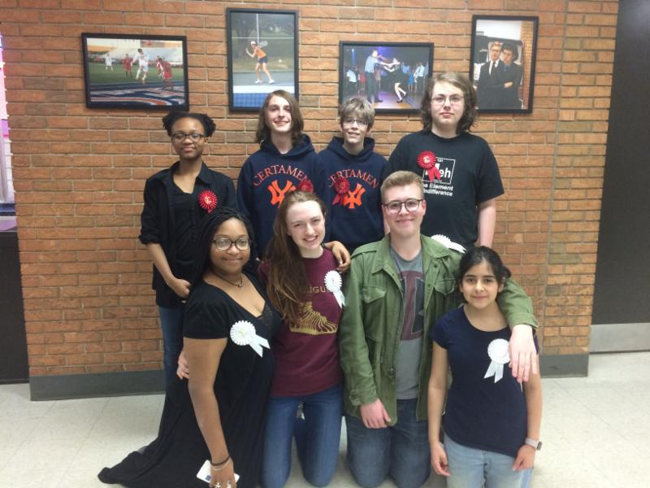
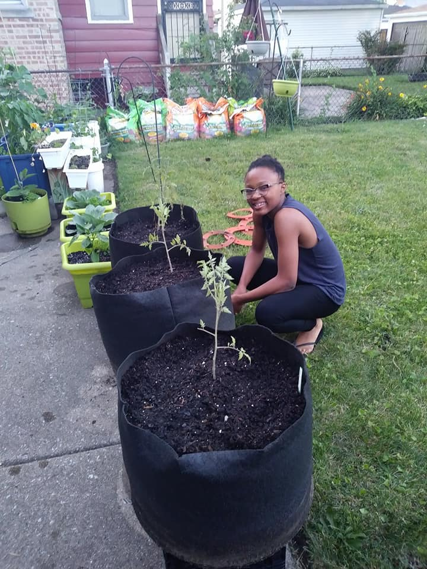
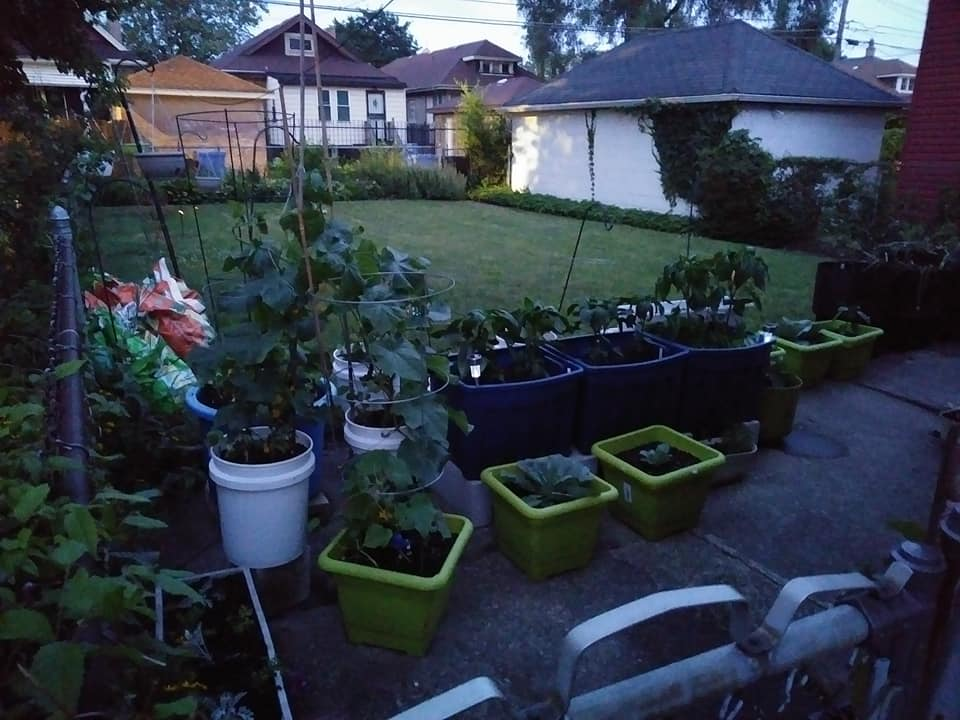

Certamen 2014-Present

I have been a member of the Whitney M.Young Certamen team since 2014. Certamen is Latin word that means battle or struggle,but in this context Certamen is probably best described as a sort of Latin Jeopardy. At every Certamen competition
your team of four people is tested on Latin grammar, Greek mythology, Roman architecture and culture, as well as Latin literature. In 2015 and 2016 my team won regionals and placed second at state. In 2017 when competing at the advance
level we placed second in the region.
My Garden feat. squash

I have been doing an urban garden with my aunt since 2014. Every summer we plant cucumber, watermelons, carrots, beets, bell peppers and tons of other things. Usually our yield for carrots and peppers is too much for us to handle so we
drop off some of the produce at the Hyde Park Women's Shelter. This particular picture shows me posing next to some squash that was planted very late into the season.
My Garden 2017

This picture shows about half of my garden as of May 2017. I plan to continue to expand my garden and I hope that in the future I can grow enough to contribute more to the Women's shelter.